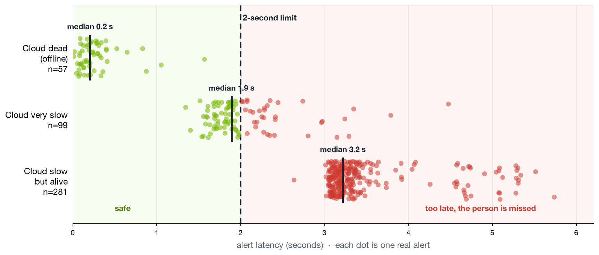

A resilience compiler for edge / Physical-AI systems.
Don't ask an AI what to do while a system is failing. Prove what works beforehand, and use only what's proven.
The network drops. The cloud gets slow but not fully dead. Bandwidth runs out. The device overheats and slows down. The real danger is not being a little less accurate. It is the system quietly stopping the one job it was given, like missing a person in a danger area.
The usual approach is: if the cloud is slow, use the local model. Two problems. Nobody checked whether that backup still does the job when things fail. And it only covers the failures someone thought of, not the ones that happen.
The tempting shortcut is worse: letting an AI make it up while the system is failing, on something that can hurt people.
Failsafe tries many backup plans, breaks the network on purpose, and measures each one. A fixed checker, not the AI, decides what passes. Only the plans that pass go on the device. If none pass, it stops safely.
The AI helps before. It never decides while things are failing.
Green rows show the worst result across every clean run, on three corpus seeds. Measured.
Real video, the real system, a planned set of failures. Cut the network, and Failsafe keeps watching while an ordinary system goes blind. One system, five different jobs.

Same setup. As the cloud slows, alerts cross the 2-second line. When it is dead, all 57 arrive on time. When it is slow but alive, every one of 281 is too late.
Four find a verified backup. The fifth is where the system correctly refuses. Same machinery. Only the job, the area it watches, and the goal change.
In the one live search that completed, Nemotron proposed the best plan first. Two other attempts were rejected by the checker before any test ran, which is the point: it cannot make a broken plan look good. The test campaigns are built to run on Nebius Serverless Jobs.
A research prototype, verified against its own test corpus. Open source, and every result can be reproduced.